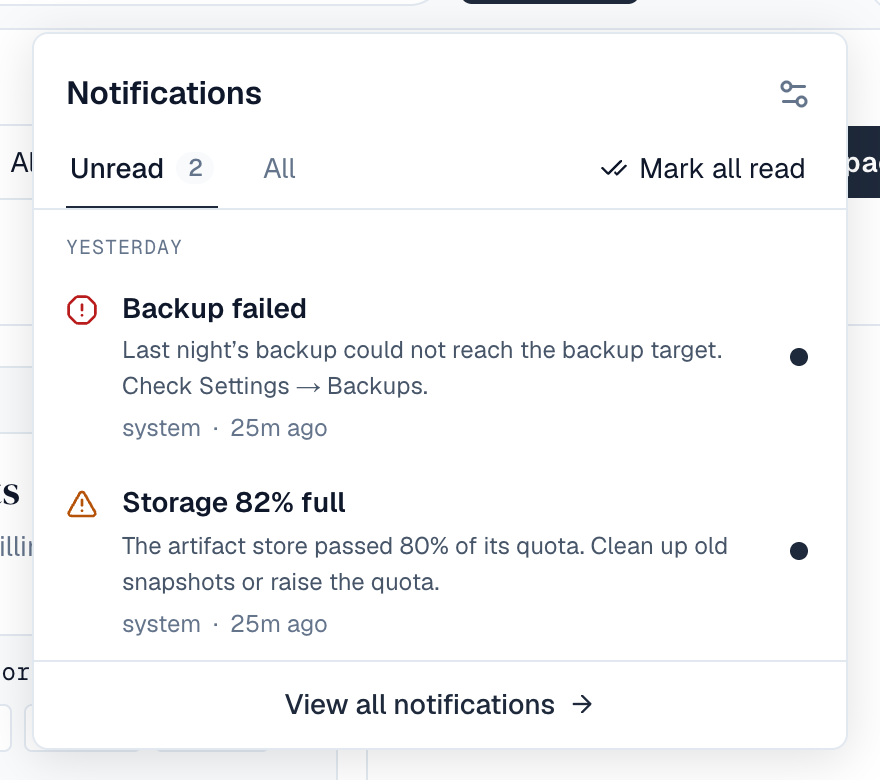
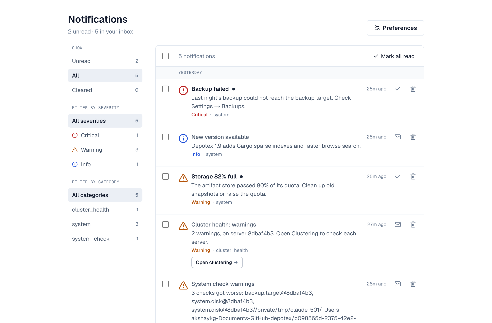

1. What Are Alerts?
Alerts are real-time notifications that keep you informed about important events in your Depotex instance. They appear instantly via the bell icon in the top navigation bar — no page refresh needed.
Alerts can notify you about:
- System maintenance and updates
- Deployment status changes
- Security events
- Scheduler job health issues
- Custom notifications from plugins
- Administrative actions
2. The Bell Icon
The bell icon in the top-right corner of the navigation bar is your notification center.

Unread Badge
When you have unread notifications, a red badge appears on the bell icon showing the count:
- Numbers 1–99 display as-is
- Counts above 99 display as "99+"
- No badge means no unread notifications
Notification Dropdown
Click the bell icon to open the notification panel. On a phone it opens full screen. It shows:
- Unread and All tabs. Notifications you read on the Unread tab stay listed until you switch tabs or close the panel
- Notifications grouped by Today, Yesterday and Earlier, each with its severity icon (critical, warning, info), category and time
- The notification's action button, when it has one (such as Open scheduled jobs)
In the panel:
- Click a notification, or the dot beside it, to mark it read; click the dot again to mark it unread
- Mark all read marks every notification read
- The settings icon opens your notification preferences
- View all notifications opens the full notifications page
Toast Notifications
Critical-severity alerts also pop up as notifications, in the same place as every other short message (bottom-right corner; full width at the bottom on phones). Each one:
- Shows once per browser tab, and stays until you close it (X, Esc, or swipe down on a phone)
- Open alert goes to the related action, or the notifications page
- At most 3 notifications show at a time; more wait behind a “+N more” label
Other short messages work the same way: confirmations (“Saved.”) disappear after 4 seconds, information after 6, warnings (such as an organization policy in warn mode) after 8; errors and messages with a button (such as Reload when a new version is available) stay until closed. Hovering over them pauses the countdown.
3. Full Notifications Page
Go to /alerts (or View all notifications in the panel) for every notification you have. It opens on Unread.

Features
- Show — Unread, All (your inbox) or Cleared, with how many each holds
- Severity and Category — narrow the list, with counts; on a phone the severities are chips above the list
- Select several — tick them, then Mark read or Clear (on the Cleared view, Restore)
- One at a time — mark read or unread, or clear. A cleared notification shows Undo for a moment, and stays under Cleared where Restore brings it back
- Preferences — opens your notification preferences
- Load more — for long histories
Alert States
| State | Meaning |
|---|---|
| Unread | New notification, not yet acknowledged |
| Read | You've seen it (marked via dropdown or individual action) |
| Cleared | Removed from your feed (soft-deleted for you only) |
Clearing a notification only affects your view — other users who received the same notification can still see it.
4. Alert Preferences
Manage your notification preferences in your profile settings under Notifications (open the profile menu, then settings), or with the settings icon in the bell panel or Preferences on the notifications page.
Opt-Out Toggle
Enable "Opt out of non-critical alerts" to suppress all notifications except:
- Critical-severity alerts
- Alerts in forced categories (configured by your administrator)
Muted Categories
You can mute specific notification categories to stop receiving them. For example, mute "marketing" or "tips" categories if they're not relevant to you.
Some categories are marked as "Forced" by your administrator. These cannot be muted and are always delivered regardless of your preferences. They appear with a lock icon and distinct styling in the preferences panel.
Effective Preferences
The preferences panel shows a summary of your effective settings — what you'll actually experience after forced categories are applied.
5. Alert Severity Levels
| Severity | Color | Behavior |
|---|---|---|
| Critical | Red | Triggers toast notification, always delivered |
| Warning | Amber | Standard delivery, no toast |
| Info | Blue | Standard delivery, no toast |
6. Alert Targeting
Alerts can be targeted in three ways:
- Broadcast — sent to all users
- Role-based — sent to users with specific roles (e.g., only admins)
- User-specific — sent to specific individual users
You only see alerts that target you based on your current roles and user ID.
7. Supersession (Smart Deduplication)
When a newer notification replaces an older one in the same category (e.g., a deployment status update), the old notification is automatically hidden. You always see only the most recent, relevant notification per category.
8. Real-Time Delivery
Notifications are delivered in real-time via WebSocket:
- No page refresh needed — new alerts appear instantly
- The unread count updates automatically
- If your connection drops, it reconnects automatically
- If WebSocket is unavailable, the system falls back to periodic polling
9. Multi-Device Support
You can be connected from multiple browser tabs or devices simultaneously. All connections receive notifications independently.